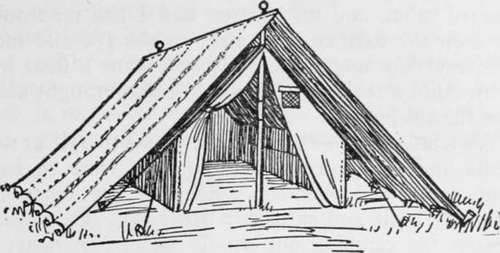
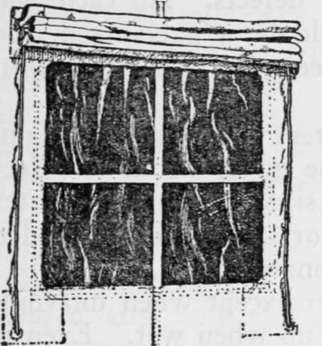
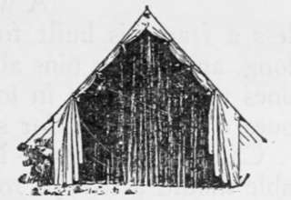

Tents For Fixed Camps. Part 3
Description
This section is from the book "Camping And Woodcraft", by Horace Kephart. Also available from Amazon: Camping and Woodcraft.
Tents For Fixed Camps. Part 3
Fig. 2. Extension Fly.
A fly large enough to project three or four feet for shelter over the doorway is not objectionable; in fact it is a good thing, especially if made long enough to come almost to the ground at the sidesfor baggage, dry wood, dogs, etc. Such a fly weighs and costs about as much as the tent itself. For security in a wind, the " storm set " should be used (Fig. 10).
Fig. 3. Tropical Tent.
Sod-Cloth
If a tent is not to be floored and fitted with a base-board, it should have a sod-cloth. This is a strip of 8-ounce canvas, about 9 inches wide, that is sewed all along the bottom edge of the tent walls, both sides and ends (Fig. 16). When the tent has been set up, this sod-cloth is turned in on the floor and weighted down with poles or stones. Its function is to keep out insects and draughts that otherwise would enter through the numerous gaps that are left between tent pegs. The bottom edge of a tent is the worst possible place to get ventilation from; one might as well seek to ventilate a house through cracks in the floor. Banking the tent inside with leaves and earth is a poor substitute for a sod-cloth. It will not stay tight for an hour, and the earth rots the canvas.
Ground-Sheet
In a small tent that often is shifted from place to place, a ground-sheet to cover "jie floor and lap over the sod-cloth is a good thing.
Figure 3 shows one of Edgington's tropical tents with such a fly (similar ones are made in this country). Note the liberal air-space between fly and tent. The shelter outside the tent walls is useful to keep the interior dry and secure against insects; but in a fixed camp such a carpet is a nuisance. It gets filthy, and it stays so. Bare earth is soon trodden down hard so that it is easy to sweep and keep clean. I have lived for months in an un-floored cabin, and my partner and I had no trouble to keep the earthen floor neat to the eye and more sanitary than any carpet. If you want a floor in a tent, build a real one of dressed boards brought along for the purpose.
Ventilation
" Nessmuk " used to rail at wall tents and wedge tents because they were so fusty and damp and cheerless. So they are when improperly built and carelessly managed. One's main reason for Camping out should be to get plenty of fresh air and sunshine. It is not enough to have good air in daytime. One-third of our time is spent in bed. And yet it is common practice to close the tent tight at night, especially if there are any mosquitoes about. Consider. Who would spend summer nights at home with no window open ? A Veil, a tent closed up is less permeable to air than the average house with windows down.
The notion that night air in the woods is malarial or otherwise unwholesome is idiotic. It is the best air there is. Still, you can't buy a wall tent in America that has proper means of ventilation, unless you have it built to order. Army tents have ventilators, so-called, that are nothing but a hole at each peak, four inches wide and eight inches long. A tent window, to be of any account, should be not less than 12 x 18 inches.
Our best tent makers will fit one or more windows in a tent wherever the owner wants them, at from $1.00 to $2.50 each. The opening is covered with fine-mesh bobbinet, taped around the edges and crosswise, with a canvas storm flap that can be raised or lowered from the inside (Fig. 4). A more elaborate kind, that may be detached and rolled up when the tent is folded, is made of copper mosquito bar, and has a celluloid window that can be slipped in when it rains.
In a tent of ordinary size, one such window at the rear, with the doorway left wide open in fair weather, will make the place a cheerful and wholesome abode instead of a fusty den.
Mosquito Bar
The doorway may be screened by a sort of drop-curtain of bobbinet or cheesecloth; ordinary mosquito netting is too easily torn, and its mesh is too open to exclude the smaller mosquitoes and gnats. Bobbinet is expensive. The tentmaker will attach a cheesecloth front to a tent 9 to 14 feet wide for about $2.85.
Fig. 4. Bobbinet Window.
Fig. 5. Mosquito Curtain.
Rear Door
For about the same price as a window, and serving as well for ventilation, the tent-maker will put an extra door in the rear end of the tent, with cheesecloth screen. This is a better arrangement for hot weather, and often convenient when there is a driving rain or a contrary wind; but it reduces the space for wall-pockets, shelves, etc.
Door Weights
To do away with pegs at the entrance, that you are apt to stumble over, tie a short and rather heavy pole to the bottom of each flap. This holds the door open when desired, and closes it securely against dogs, " varmints," and the elements.
Stove-Pipe Hole
A simple tin protector for this opening is an annoyance at night, for it scrapes and skreeks when the canvas slats in the wind. Tent-makers supply pipe shields of asbestos that are quite safe, noiseless, and roll up nicely with the tent when it is stored or en route. A flap covers the opening when no stove is in use (Fig. 6).
Tent Poles And Pins
Poles should be of ash, white pine, or spruce, straight-grained and free from defects. At each end there should be a galvanized iron band to keep the pole from splitting.
A wall tent requires stakes (unless a frame is built for the guys) about two feet long, and becket pins about sixteen inches. Shorter ones will not hold in loose or sandy soil. Wooden ones do very well for stationary camps.
Continue to: